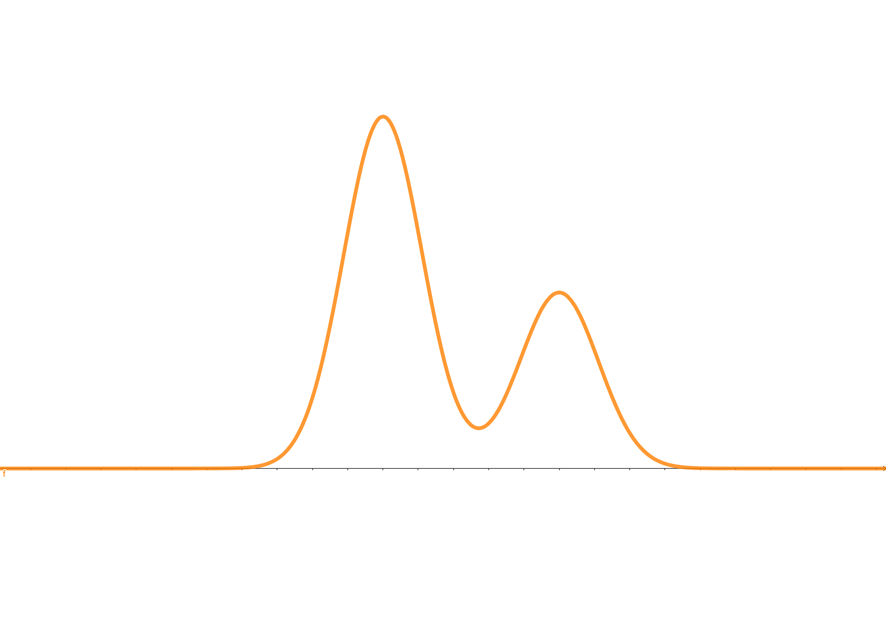
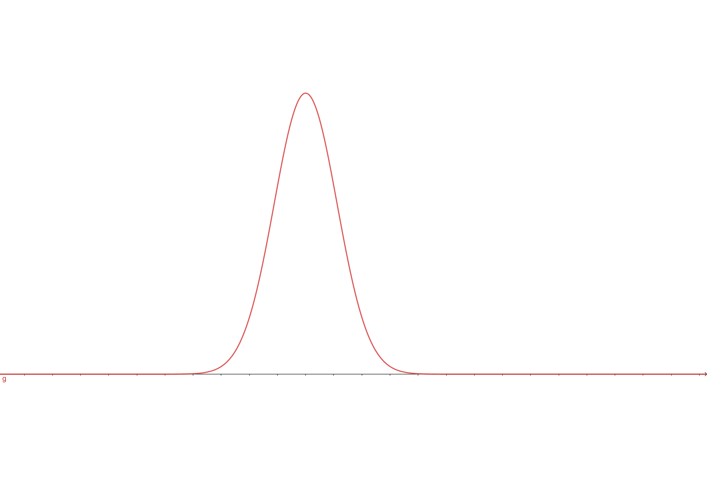
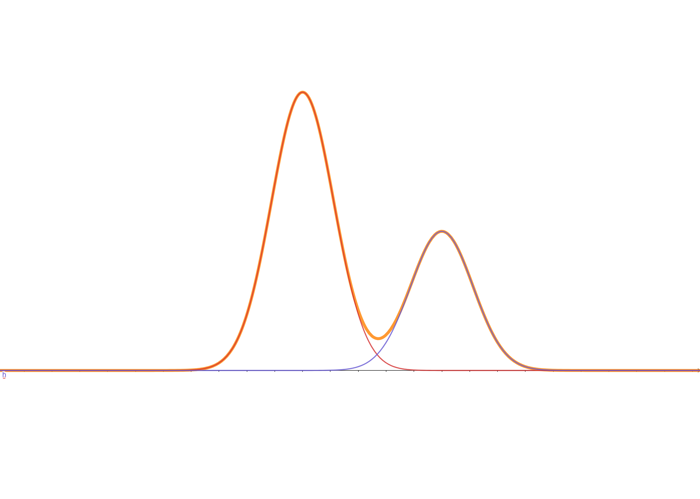
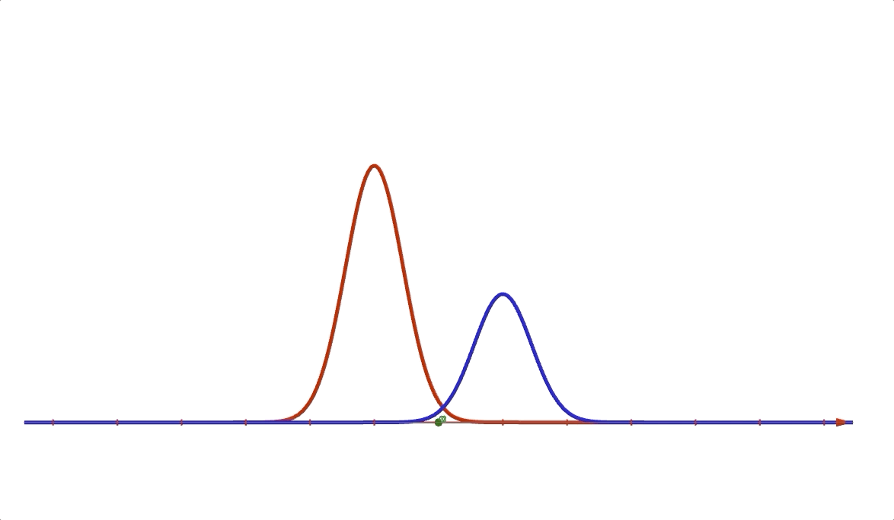

An Introduction to Mixture Models
From Supervised to Unsupervised Learning1
We have discussed many machine learning algorithms, including linear regression, linear classification, neural network models and e.t.c, till now. However, most of them are supervised learning, which means a teacher is leading the models to bias to a certain task. To these problems our major attention was on the probability distribution of parameters given inputs, outputs, and models:
\[ p(\boldsymbol{\theta}|\boldsymbol{x},\boldsymbol{y},M)\tag{1} \]
where \(\boldsymbol{\theta}\) is a vector of the parameters in the model \(M\) and \(\boldsymbol{x}\), \(\boldsymbol{y}\) are inputs vector and output vector respectively. As what Bayesian equation told us, to maximize equation (1) we can use an indirect method, through which the maximum likelihood is always employed. And the probability
\[ p(\boldsymbol{y}|\boldsymbol{x},\boldsymbol{\theta},M)\tag{2} \]
is the key component of the method. More details about the maximum likelihood method can be found Maximum Likelihood Estimation.
In today's discussion, another probability will come to our's mind. If we have no information about the class of the data points from the training set, it is to say we have no teacher in the training stage. What we would have to concern, now, is just:
\[ p(\boldsymbol{x})\tag{3} \]
Our task, now, could be no more called classification nor regression. It is referred to as 'cluster' which is a progress of identifying which group the data point belongs to. What we have here is just a set of training points \(\boldsymbol{x}\) and the probability \(p(\boldsymbol{x})\). Although this probability is over one random variable, it can be arbitrarily complex. And sometimes, bringing in another random variable as assistance and combining them could get a more tractable distribution. That is to say, a joint distribution of observed variable \(\boldsymbol{x}\) and another created random variable \(\boldsymbol{z}\) could be more clear than the original distribution of \(\boldsymbol{x}\). And sometimes under this combination, the conditional distribution of \(\boldsymbol{x}\) given \(\boldsymbol{z}\) is very clear, too.
Let's have look at a very simple example. \(\boldsymbol{x}\) has a distribution:
\[ a\cdot\exp(-\frac{(x-\mu_1)^2}{\delta_1})+b\cdot\exp(-\frac{(x-\mu_2)^2}{\delta_2})\tag{4} \]
where \(a\) and \(b\) are coeficients and \(\mu_1\), \(\mu_2\) are mean of the Gaussian distributions and \(\delta_1\) and \(\delta_2\) are variance. It looks like:

The random variable of equation (4) is just \(x\). However, now, we introduc anthor random varible \(z\in \{0,1\}\) as a helper, in which \(z\) has a uniform distribution. Then the distribution (4) can be rewritten in a joint form:
\[ p(x,z)=z\cdot a\cdot\exp(-\frac{(x-\mu_1)^2}{\delta_1})+(1-z)\cdot b\cdot\exp(-\frac{(x-\mu_2)^2}{\delta_2})\tag{5} \]
for \(\boldsymbol{z}\) is discrete random variable vector who has a uniform distribution so \(p(z=0)=p(z=1)=0.5\) and the conditional distribution is \(p(x|z=1)\) is
\[ a\cdot\exp(-\frac{(x-\mu_1)^2}{\delta_1})\tag{6} \] looks like:

And the conditional distribution is \(p(x|z=0)\) is \[
b\cdot\exp(-\frac{(x-\mu_2)^2}{\delta_2})\tag{7}
\] looks like: 
And the margin distribution of \(x\) is still equation (4)

and its 3D vision is:

So the conditional distribution of \(x\) given \(z\) is just a single-variable Gaussian model, which is much simple to deal with. And so is the margin \(p(x)\) by sum up all \(z\) (the rule of computing the margin distribution). Here the created random variable \(z\) is called a latent variable. It can be considered as an assistant input. However, it can also be considered as a kind of parameter of the model(we will discuss the details later). And the example above is the simplest Gaussian mixture which is wildly used in machine learning, statistics, and other fields. Here \(z\), the latent variable, is a discrete random variable, and the continuous latent variable will be introduced later as well.
Mixture distribution can be used to cluster data and what we are going to study are:
- Nonprobabilistic version: K-means algorithm
- Discrete latent variable and a relative algorithm which is known as EM algorithm
References
Bishop, Christopher M. Pattern recognition and machine learning. springer, 2006.↩︎